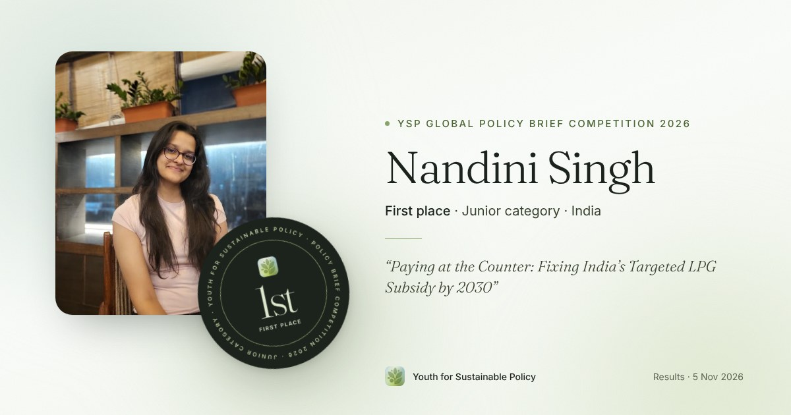
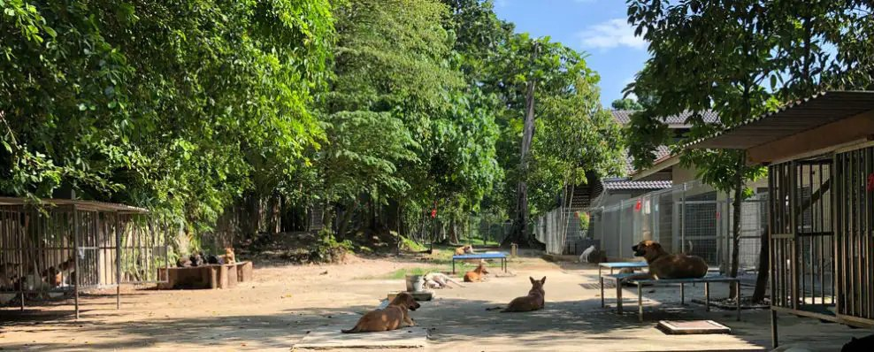

Our Mission
To equip young people to understand public policy, produce informed work and contribute to more sustainable and equitable societies through research, dialogue and public engagement.
![]()
Youth for Sustainable Policy
Loading Youth for Sustainable PolicyYouth for Sustainable Policy is an international youth-led organisation advancing research, dialogue and public engagement on sustainability, governance and global affairs. We bring young people together to investigate issues, develop ideas, communicate evidence and contribute to the communities around them.
Public policy influences the homes we can afford, the education we receive, the healthcare we access and the environments we live in.
Young people bring valuable knowledge of these experiences. Turning that knowledge into a researched argument, a useful publication or an organised community initiative takes practice, feedback and people to work alongside.
YSP exists to make those opportunities more accessible. We create entry points into policy work and help young people develop the skills to contribute thoughtfully.
A note from founder, Mei Tong K.
Young people are among those most profoundly affected by the policy decisions being made today — on climate, economic systems, digital governance, and public health — yet they are rarely given accessible entry points to understand or influence those decisions.
YSP exists to close that gap. It does so not by simplifying policies, but by equipping young people with the research skills, the writing practice, the network, and the published track record that allow them to enter policy spaces with genuine credibility.
The byline, the certificates, the mentor relationship, and the alumni network are not afterthoughts — they are mechanisms through which YSP converts programme participation into career-relevant evidence that members can point to for the rest of their professional lives.
To equip young people to understand public policy, produce informed work and contribute to more sustainable and equitable societies through research, dialogue and public engagement.
A world where young people can participate meaningfully in the decisions shaping their communities and futures.
Our approach connects learning with practical work and reflection.
Through this process, we aim to help young people build research and communication skills, develop informed judgement and work effectively with others. Explore our Theory of Change.
Every YSP member finishes a cohort with four things they can point to for the rest of their career — not as keepsakes, but as the working proof that the work was real.
Every Impact Project is published under the member's own name — researched, drafted, and signed. The byline is the most portable credential we offer.
A signed track-completion certificate, issued by YSP and recognised across our partner institutions. Plain, verifiable, and earned.
A practitioner mentor walks alongside every member across the 16-week curriculum. Most relationships outlast the cohort.
An alumni database that opens up referrals, collaborations, and introductions across research, policy, and civic institutions in the region.
YSP’s work spans six programme areas. Each offers a different way to engage with policy and sustainability.
Research, education, publications, interviews and policy dialogue that explore issues affecting communities.
Visit page Active nowOpportunities to develop locally relevant activities, discussions and projects with other young people.
Visit page Relaunching 14 Dec 2026A structured remote internship through which participants contribute to YSP projects across research, growth and communications.
Visit page Essay entries 1–31 Dec 2026Opportunities to develop arguments, examine evidence and present ideas through policy briefs, essays and other formats.
Visit page Monthly intake openAn international community supporting outreach, educational content and connections between YSP and young people in different places.
Visit page Founding teams formingLocal and regional teams bringing people together around shared policy interests and community priorities.
Visit pageEach programme page carries its current schedule, eligibility and delivery status. Explore all programmes →
We encourage contributors to examine sources, explain their reasoning and acknowledge uncertainty.
We use writing, interviews, explainers and discussion to help people engage with complex questions.
Our international network creates opportunities to compare perspectives while paying attention to the circumstances of each community.
Members contribute ideas, take responsibility for projects and develop their skills through collaboration.
YSP connects youth participation with the interconnected challenges addressed by the United Nations Sustainable Development Goals.
Our organisational priorities align most closely with Quality Education, Reduced Inequalities, Peace, Justice and Strong Institutions, and Partnerships for the Goals. These goals reflect our commitment to policy learning, accessible participation, informed public dialogue and collaboration.
Our research, publications, competitions and community initiatives explore further goals according to their subject matter, including clean energy, climate action, sustainable cities, health and responsible consumption.

Policy literacy, research practice and learning through participation.

Accessible participation for young people wherever they are.

Informed public dialogue and trust in how decisions are made.

Collaboration with schools, organisations and partners.


| Goal | Connection to YSP | Positioning |
|---|---|---|
| 1 · No Poverty | Research on social protection, affordability and economic exclusion | Project-Specific |
| 2 · Zero Hunger | Food security, sustainable agriculture and food-system policy | Project-Specific |
| 3 · Good Health And Well-Being | Health policy, healthcare access and the social determinants of health | Project-Specific |
| 4 · Quality Education | Policy literacy, research practice, educational resources and learning through participation | Organisational Priority |
| 5 · Gender Equality | Gender-responsive policy research and equitable access to participation and leadership | Project-Specific |
| 6 · Clean Water And Sanitation | Water governance, access, sanitation and resource management | Project-Specific |
| 7 · Affordable And Clean Energy | Energy policy, fossil fuel subsidies and the energy transition | Established Thematic Connection |
| 8 · Decent Work And Economic Growth | Labour policy, sustainable economic development and skills development | Project-Specific |
| 9 · Industry, Innovation And Infrastructure | Digital governance, responsible innovation and infrastructure policy | Project-Specific |
| 10 · Reduced Inequalities | Accessible opportunities, youth inclusion and attention to unequal policy effects | Organisational Priority |
| 11 · Sustainable Cities And Communities | Housing, transport, urban sustainability and local policy | Project-Specific |
| 12 · Responsible Consumption And Production | Resource use, sustainable business and fossil fuel subsidy reform | Established Thematic Connection |
| 13 · Climate Action | Climate-policy research, education and public engagement | Established Thematic Connection |
| 14 · Life Below Water | Marine conservation, fisheries and ocean governance | Project-Specific |
| 15 · Life On Land | Biodiversity, land use, conservation and environmental governance | Project-Specific |
| 16 · Peace, Justice And Strong Institutions | Informed participation, governance, accountability and inclusive policy dialogue | Organisational Priority |
| 17 · Partnerships For The Goals | Collaboration across organisations, disciplines, countries and communities | Organisational Priority |
Select a goal to see how it connects to our work. Each project’s SDG alignment will identify the relevant goal, explain the connection and link to the supporting work. Goal names follow the UN framework; illustrations are YSP’s own.

Participants wrote 600–900-word policy briefs responding to a climate and energy policy prompt. Twenty finalists were selected from more than 100 briefs submitted from 40 countries, and the winning briefs on fuel subsidy reform are published.
Results announced 5 November 2026 · 2027 edition to be announced
See the results
Why rescue alone doesn’t work, where Malaysia’s animal-welfare framework breaks, and why the most useful young people in this field are operations thinkers.
Interview · June 2026 · 8 min read
Read the conversationA 12-week, remote, mentor-led internship. Interns work across research, growth and communications and finish with a final capstone.
Relaunching 14 December 2026
See the programmeYSP is youth-led, practitioner-guided, and built on the belief that good policy work requires patience, evidence, and people who genuinely care about the outcome.
Founded by a team of students and early-career practitioners who wanted policy work to be something young people could enter — not just read about. The C-Suite is youth; the advisor bench is senior.
Membership is free and always will be. There are no application fees, no hidden tracks, and no prerequisites — just a willingness to do the work seriously, and a pledge to do it with care.
YSP is grounded in Singapore and Southeast Asia, but our ambassador network alone spans 85 countries. Members work on issues that matter regionally — and meet collaborators from far beyond it.
YSP brings together young researchers, writers, organisers, communicators, designers and collaborators across countries and disciplines.
Our team coordinates programmes and publications, supports contributors and develops relationships that help the work grow. Ambassadors and chapter teams connect those opportunities with their own communities.
657 Global Youth Ambassadors appear in our public directory, living in 85 countries. This counts ambassadors appointed from the Founding Cohort 2026 to the October 2026 intake.

Social Issues Bubble (SIB°) is a youth-led platform that examines social issues through writing, discussion and storytelling. Starting from the idea that social issues are connected, SIB publishes SIB Research briefs, SIB Perspectives essays, SIB Dialogues conversations, The Bubble Podcast and The SIB Review, a curated digital magazine.

BrainInk Magazine is a student-led magazine on psychology, mental health and human stories. Students write, research, edit and design each issue, with the aim of making psychological knowledge accessible, amplifying unheard voices and giving young writers, researchers and creators a place to share their work.
All partners and partnership enquiries →
We collaborate with organisations that share our interest in research, education, dialogue and public engagement. Collaboration can include a joint publication, a competition, an educational activity or a project built around a shared question.
By 31 December 2027, YSP aims to be a formally established, internationally operating youth policy organisation and social enterprise: sustainable, professionally run, and led by young people around the world.
Registered, with a seated Governing Board and published accounts, so that partners and funders can work with us with confidence.
Active team members across research, programmes, growth and communications, many joining through the GreenHouse Internship Programme.
A large global ambassador network, organised through regional chapters and led by young people in their own communities.
Steady support from grants, partners and our own social-enterprise work, with a small professional core that keeps the work running.
As YSP develops, we aim to document what we deliver, how people participate and what we learn from their experiences.
Our reporting will bring together programme activity, published work, participant feedback and organisational developments. We will use those findings to improve how we plan and deliver our work. Our first Annual Report, covering 2026, is due by 31 January 2027.
Bring a question you want to investigate, a skill you want to contribute or an idea you would like to develop with others. There are no fees, and you can also start by taking the YSP Pledge.